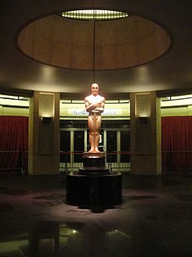

Los Premios Oscars
los Premio de la Academia de Artes y Ciencias Cinematográficas —en inglés, Academy Award—, conocido popularmente como Premio Óscar, es un premio anual concedido por la Academia de las Artes y las Ciencias Cinematográficas (en inglés: AMPAS; Academy of Motion Picture Arts and Sciences) en reconocimiento a la excelencia y activismo social de los profesionales en la industria cinematográfica que incluye actores, directores y escritores, ampliamente considerado el máximo honor en el cine. El Oscar se conoce, oficialmente, como el «Premio de la Academia al Mérito», y es el principal de los nueve premios que otorga dicha organización.
El acto formal en el que se presentan los premios es una de las ceremonias más prominentes y prestigiosas del mundo, y se transmite en vivo anualmente para más de cien países. Es también la ceremonia de entrega de premios más antigua en los medios de comunicación, y sus equivalentes: el Grammy iniciado en 1959 (en la música); el Emmy, iniciado en 1949 (en la televisión), y el Tony, iniciado en 1947 (en el teatro), han seguido el modelo de la Academia.